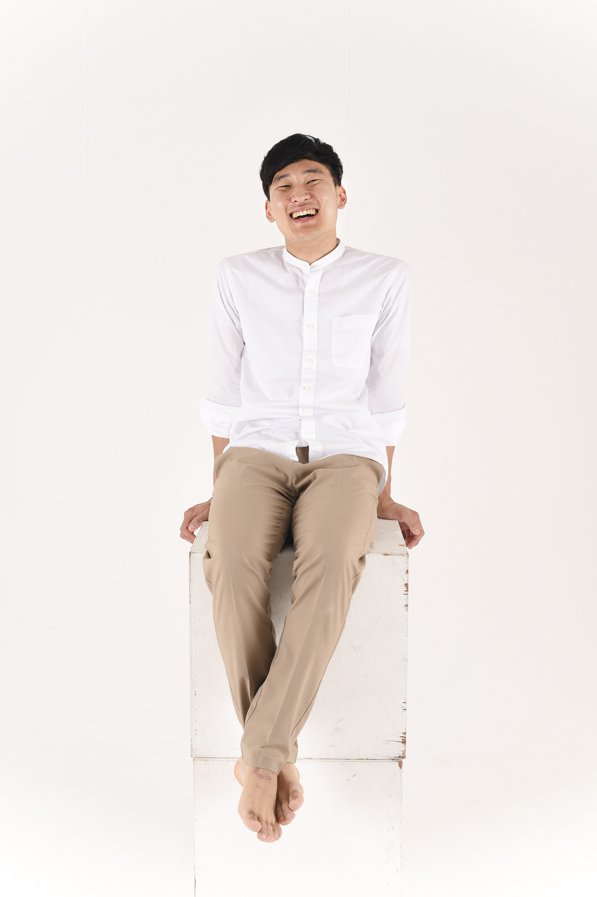

|  |
Fanuk LeeA graduate student of Korea National University of Cultural Heritage. I graduated from Hongik University's Sculpture Department in February 2018 and worked as a 3D modeler for 2 years. I worked for 'Wipco' until June of this year, and I am currently taking the 'Information Processing Industry Engineer Acquisition Course' as a state-funded class to study programming for admission to this graduate school. contect |
|
|